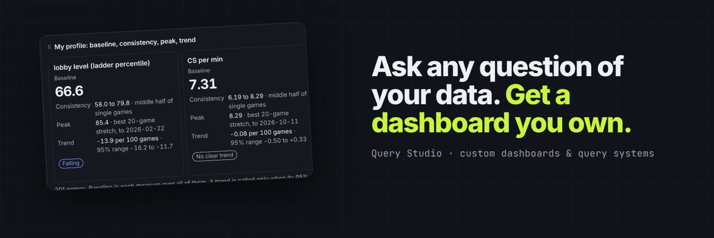
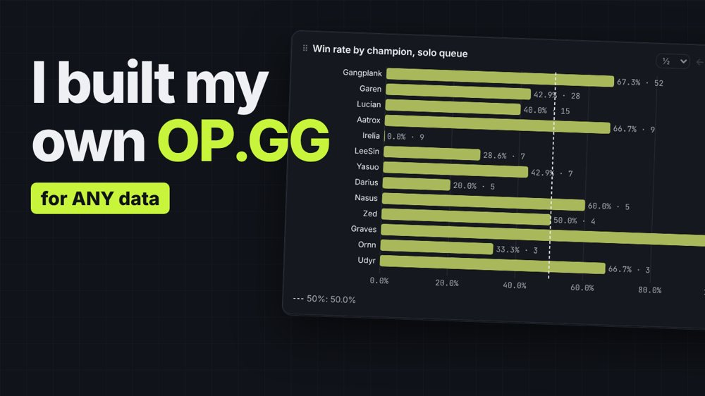
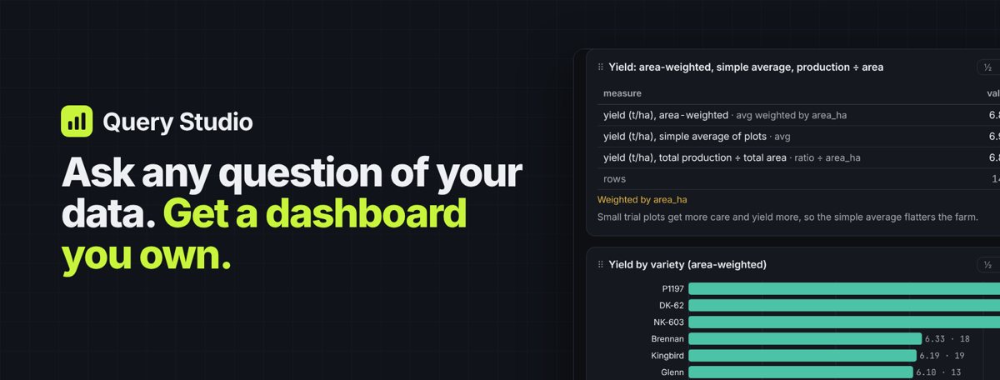
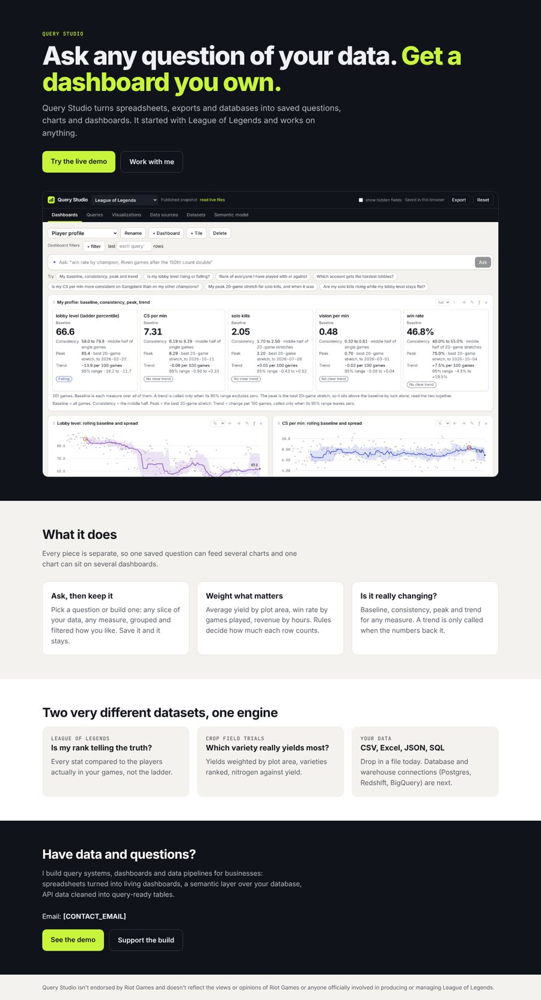
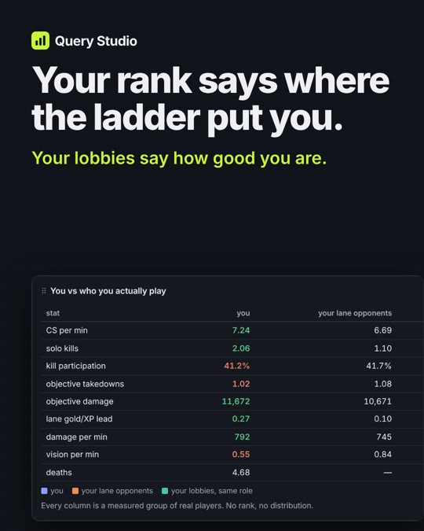
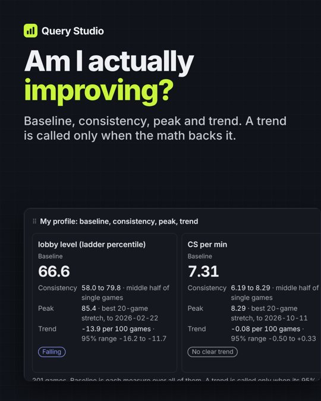
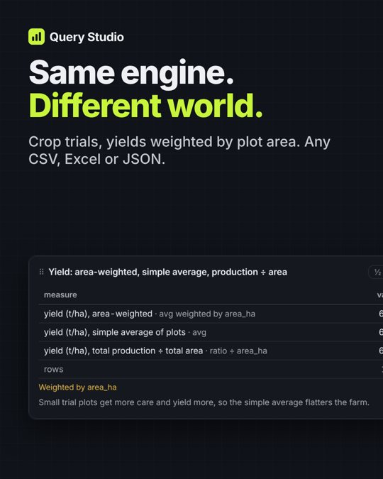
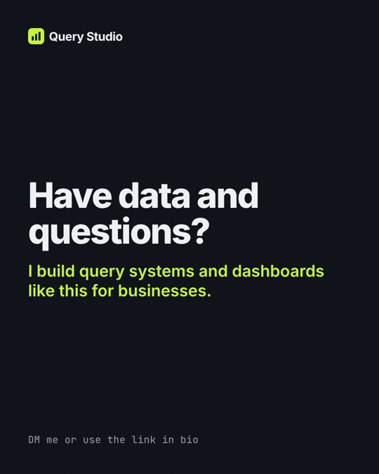
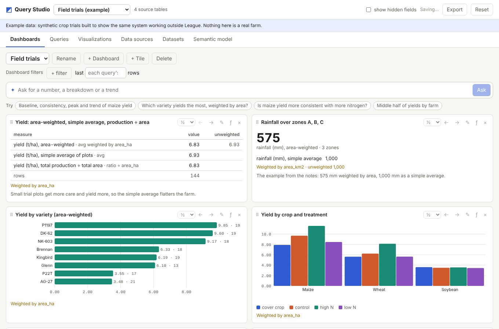
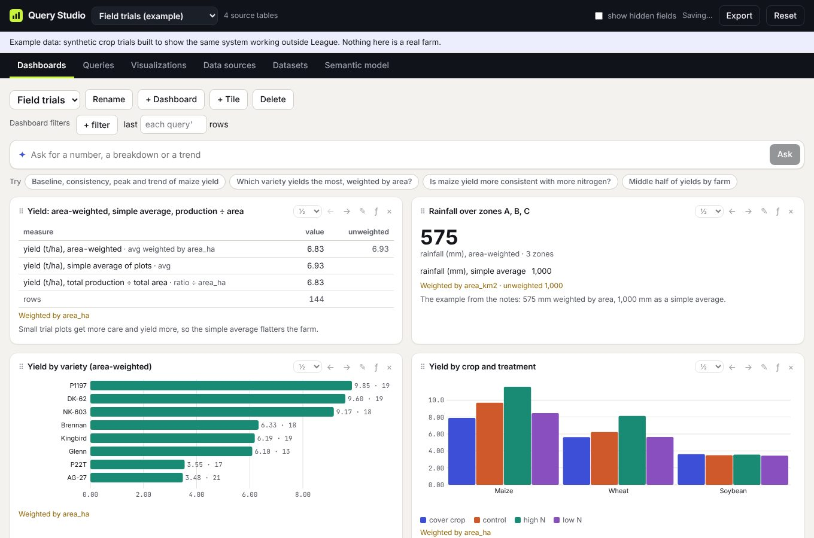

<title>Query Studio Launch Plan</title>
<meta name="claude:viewport-fit-sides" content="cover">
<link rel="stylesheet" href="https://fonts.googleapis.com/css2?family=Inter:wght@400;500;600;700&family=JetBrains+Mono:wght@400;500&display=swap">
<style>
/* Layout: ink masthead in the product's own chrome, then a single reading column with wide bands for the brand directions and the calendar. */
:root {
  --ink: #101319; --ink-text: #eef0f4; --ink-text-2: #9aa0ac; --signal: #c8f53c;
  --bg: #f3f2ee; --surface: #ffffff; --surface-2: #f0efea; --text: #14161b; --text-2: #565961; --border: #e3e1da;
  --accent: #3d4fd6; --accent-2: #eceefd; --warn: #8f6200; --warn-bg: #fdf4d8;
  --font: Inter, ui-sans-serif, system-ui, -apple-system, "Segoe UI", sans-serif;
  --mono: "JetBrains Mono", ui-monospace, Menlo, Consolas, monospace;
}
@media (prefers-color-scheme: dark) { :root:not([data-theme="light"]) {
  --ink: #08090c; --bg: #0d0f13; --surface: #15181e; --surface-2: #1d2129; --text: #eceef2; --text-2: #a6abb6; --border: #2a2f39;
  --accent: #8e9bff; --accent-2: #1e2340; --warn: #e8b84a; --warn-bg: #2f2918; color-scheme: dark; } }
:root[data-theme="dark"] {
  --ink: #08090c; --bg: #0d0f13; --surface: #15181e; --surface-2: #1d2129; --text: #eceef2; --text-2: #a6abb6; --border: #2a2f39;
  --accent: #8e9bff; --accent-2: #1e2340; --warn: #e8b84a; --warn-bg: #2f2918; color-scheme: dark; }
* { box-sizing: border-box; }
body { background: var(--bg); color: var(--text); font: 15px/1.55 var(--font); margin: 0; }
.wrap { max-width: 1080px; margin: 0 auto; padding-left: max(16px, env(safe-area-inset-left, 0px)); padding-right: max(16px, env(safe-area-inset-right, 0px)); }
header.mast { background: var(--ink); color: var(--ink-text); }
header.mast .wrap { padding-block: 34px 30px; display: flex; flex-direction: column; gap: 10px; }
.brand { display: flex; align-items: center; gap: 10px; font-weight: 650; letter-spacing: -.02em; }
.brand svg { width: 26px; height: 26px; color: var(--signal); }
h1 { font-size: clamp(28px, 5vw, 42px); line-height: 1.1; letter-spacing: -.03em; margin: 6px 0 0; text-wrap: balance; max-width: 22ch; }
.lede { color: var(--ink-text-2); max-width: 62ch; margin: 0; }
.meta { font: 12px var(--mono); color: var(--ink-text-2); display: flex; gap: 16px; flex-wrap: wrap; }
.meta b { color: var(--signal); font-weight: 500; }
nav.jump { display: flex; gap: 4px 18px; flex-wrap: wrap; font-size: 13.5px; margin-top: 8px; }
nav.jump a { color: var(--ink-text); text-decoration: none; border-bottom: 2px solid transparent; padding-bottom: 2px; }
nav.jump a:hover, nav.jump a:focus-visible { border-bottom-color: var(--signal); outline: none; }
section { padding-block: 40px 8px; }
h2 { font-size: 24px; letter-spacing: -.02em; margin: 0 0 6px; text-wrap: balance; }
h3 { font-size: 16px; margin: 0 0 4px; letter-spacing: -.01em; }
p { max-width: 68ch; }
.sub { color: var(--text-2); margin: 0 0 18px; max-width: 68ch; }
.label { font: 500 11px var(--mono); letter-spacing: .08em; text-transform: uppercase; color: var(--text-2); }
a { color: var(--accent); }
.dirs { display: grid; grid-template-columns: repeat(auto-fit, minmax(min(100%, 300px), 1fr)); gap: 16px; }
.dir { background: var(--surface); border: 1px solid var(--border); border-radius: 14px; padding: 14px; display: flex; flex-direction: column; gap: 10px; min-width: 0; }
.dir.pick { border-color: var(--accent); box-shadow: 0 0 0 1px var(--accent); }
.pill { align-self: flex-start; font: 500 11px var(--mono); padding: 2px 8px; border-radius: 999px; background: var(--accent-2); color: var(--accent); }
.dir p { margin: 0; color: var(--text-2); font-size: 14px; }
.fit { display: grid; grid-template-columns: auto 1fr; gap: 2px 10px; font-size: 13px; margin: 0; }
.fit dt { color: var(--text-2); } .fit dd { margin: 0; }
/* mini mockups: fixed colors on purpose, they depict each direction's own palette */
.mock { border-radius: 10px; overflow: hidden; height: 150px; display: grid; grid-template-rows: 26px 1fr; border: 1px solid var(--border); }
.mock .bar { display: flex; align-items: center; gap: 6px; padding: 0 9px; font: 600 10px var(--font); }
.mock .body { display: grid; grid-template-columns: 1fr 1fr; gap: 7px; padding: 8px; }
.mock .t { border-radius: 6px; padding: 6px; display: flex; flex-direction: column; justify-content: flex-end; gap: 3px; }
.mock .t i { display: block; height: 6px; border-radius: 2px; }
.m-a { background: #f3f2ee; } .m-a .bar { background: #101319; color: #eef0f4; } .m-a .bar span { width: 10px; height: 10px; border-radius: 3px; background: #c8f53c; }
.m-a .t { background: #fff; box-shadow: 0 1px 2px rgba(0,0,0,.06); } .m-a .t i { background: #3d4fd6; } .m-a .t i:nth-child(2) { background: #198a74; }
.m-a .k { font: 700 18px var(--font); color: #14161b; letter-spacing: -.03em; }
.m-b { background: #0a0614; } .m-b .bar { background: linear-gradient(90deg, #2a0f4d, #0a2a4d); color: #7ef9ff; }
.m-b .t { background: #150c26; border: 1px solid #ff3ea5; box-shadow: 0 0 10px rgba(255,62,165,.35); } .m-b .t i { background: #7ef9ff; box-shadow: 0 0 6px #7ef9ff; } .m-b .t i:nth-child(2) { background: #ff3ea5; box-shadow: 0 0 6px #ff3ea5; }
.m-b .k { font: 700 18px var(--mono); color: #7ef9ff; }
.m-c { background: #f6efe3; } .m-c .bar { background: #f6efe3; color: #1b1b1b; border-bottom: 2px solid #1b1b1b; font: 700 12px Georgia, serif; }
.m-c .t { background: transparent; border-top: 1px solid #1b1b1b; border-radius: 0; } .m-c .t i { background: #9b2c2c; } .m-c .t i:nth-child(2) { background: #7a8a9a; }
.m-c .k { font: 700 18px Georgia, serif; color: #1b1b1b; }
.shots { display: grid; grid-template-columns: repeat(auto-fit, minmax(min(100%, 420px), 1fr)); gap: 16px; margin-top: 18px; }
figure { margin: 0; display: flex; flex-direction: column; gap: 6px; min-width: 0; }
figure img { width: 100%; border-radius: 10px; border: 1px solid var(--border); display: block; }
figcaption { font-size: 13px; color: var(--text-2); }
.kit { display: flex; flex-wrap: wrap; gap: 10px; margin-top: 16px; }
.sw { display: flex; align-items: center; gap: 8px; background: var(--surface); border: 1px solid var(--border); border-radius: 10px; padding: 6px 10px 6px 6px; font-size: 13px; }
.sw i { width: 26px; height: 26px; border-radius: 7px; border: 1px solid rgba(127,127,127,.25); }
.sw code { font: 12px var(--mono); color: var(--text-2); }
.tscroll { overflow-x: auto; border: 1px solid var(--border); border-radius: 12px; background: var(--surface); }
table { border-collapse: collapse; width: 100%; font-size: 14px; }
th { text-align: left; font: 500 11px var(--mono); letter-spacing: .06em; text-transform: uppercase; color: var(--text-2); padding: 10px 12px; border-bottom: 1px solid var(--border); white-space: nowrap; }
td { padding: 10px 12px; border-bottom: 1px solid var(--border); vertical-align: top; }
tr:last-child td { border-bottom: 0; }
td.stage { white-space: nowrap; font-weight: 600; }
.tag { display: inline-block; font: 500 11px var(--mono); padding: 1px 7px; border-radius: 999px; border: 1px solid currentColor; white-space: nowrap; }
.tag.att { color: #c2417a; } .tag.dep { color: var(--accent); } .tag.home { color: #198a74; } .tag.conv { color: #b06a00; }
.cols { display: grid; grid-template-columns: repeat(auto-fit, minmax(min(100%, 300px), 1fr)); gap: 16px; }
.card { background: var(--surface); border: 1px solid var(--border); border-radius: 12px; padding: 14px 16px; min-width: 0; }
.card ul, .card ol { margin: 6px 0 0; padding-left: 20px; } .card li { margin: 4px 0; }
.caution { background: var(--warn-bg); border-color: transparent; }
.caution h3 { color: var(--warn); }
.files { font: 13px var(--mono); color: var(--text-2); }
.cards4 { display: grid; grid-template-columns: repeat(auto-fit, minmax(min(100%, 200px), 1fr)); gap: 12px; margin-top: 16px; }
footer { padding-block: 40px 60px; color: var(--text-2); font-size: 13px; }
@media (prefers-reduced-motion: no-preference) { nav.jump a { transition: border-color .15s; } }
</style>

<header class="mast"><div class="wrap">
  <div class="brand"><svg viewBox="0 0 24 24" aria-hidden="true"><rect width="24" height="24" rx="6" fill="currentColor"/><rect x="5.5" y="12" width="3" height="6.5" rx="1" fill="#101319"/><rect x="10.5" y="8.5" width="3" height="10" rx="1" fill="#101319"/><rect x="15.5" y="5.5" width="3" height="13" rx="1" fill="#101319"/></svg>Query Studio</div>
  <h1>Ask any question of your data and get a dashboard you own.</h1>
  <p class="lede">The look, the funnel and the first week of posts for launching Query Studio as the flagship of a software engineering consultancy. Everything here is a draft for Bijan to review. Nothing has been posted and no accounts were touched.</p>
  <div class="meta"><span>Draft <b>2026-10-18</b></span><span>Look applied in <b>PR 4</b></span><span>Demo <b>bijanp24.github.io/query-studio</b></span></div>
  <nav class="jump" aria-label="Sections"><a href="#xig">X + Reels</a><a href="#kit">Launch kit</a><a href="#look">Look</a><a href="#funnel">Funnel</a><a href="#week0">Set-up</a><a href="#week1">Week one</a><a href="#cadence">Cadence</a><a href="#numbers">Numbers</a></nav>
</div></header>

<main class="wrap">
<section id="xig">
  <div class="label">X and Instagram · vertical first</div>
  <h2>15 Reels and 37 X posts, ready for you to post</h2>
  <p class="sub">Each Reel is 1080x1920, 15 to 21 seconds, silent so you can add a trending sound or read the captions as a voiceover. The same files work on X, TikTok and Shorts. Every number comes from the live build, and other players only appear as hashes.</p>
  <div style="display:grid;grid-template-columns:repeat(auto-fill,minmax(150px,1fr));gap:12px;margin:16px 0">
    <figure><video src="video/01-who-i-actually-play.mp4" poster="img/reels/01-who-i-actually-play-cover.jpg" controls muted playsinline preload="none" style="width:100%;aspect-ratio:9/16;border-radius:10px;background:#101319"></video><figcaption>Who I actually play</figcaption></figure>
    <figure><video src="video/02-where-did-they-go.mp4" poster="img/reels/02-where-did-they-go-cover.jpg" controls muted playsinline preload="none" style="width:100%;aspect-ratio:9/16;border-radius:10px;background:#101319"></video><figcaption>Where did they go?</figcaption></figure>
    <figure><video src="video/03-am-i-improving.mp4" poster="img/reels/03-am-i-improving-cover.jpg" controls muted playsinline preload="none" style="width:100%;aspect-ratio:9/16;border-radius:10px;background:#101319"></video><figcaption>Am I improving?</figcaption></figure>
    <figure><video src="video/04-peak-vs-baseline.mp4" poster="img/reels/04-peak-vs-baseline-cover.jpg" controls muted playsinline preload="none" style="width:100%;aspect-ratio:9/16;border-radius:10px;background:#101319"></video><figcaption>Peak vs baseline</figcaption></figure>
    <figure><video src="video/05-games-on-a-champion.mp4" poster="img/reels/05-games-on-a-champion-cover.jpg" controls muted playsinline preload="none" style="width:100%;aspect-ratio:9/16;border-radius:10px;background:#101319"></video><figcaption>Games on a champion</figcaption></figure>
    <figure><video src="video/06-one-champion.mp4" poster="img/reels/06-one-champion-cover.jpg" controls muted playsinline preload="none" style="width:100%;aspect-ratio:9/16;border-radius:10px;background:#101319"></video><figcaption>One champion</figcaption></figure>
    <figure><video src="video/07-lobby-lens.mp4" poster="img/reels/07-lobby-lens-cover.jpg" controls muted playsinline preload="none" style="width:100%;aspect-ratio:9/16;border-radius:10px;background:#101319"></video><figcaption>Lobby lens</figcaption></figure>
    <figure><video src="video/08-same-engine.mp4" poster="img/reels/08-same-engine-cover.jpg" controls muted playsinline preload="none" style="width:100%;aspect-ratio:9/16;border-radius:10px;background:#101319"></video><figcaption>Same engine, any data</figcaption></figure>
    <figure><video src="video/09-grok-on-the-build.mp4" poster="img/reels/09-grok-on-the-build-cover.jpg" controls muted playsinline preload="none" style="width:100%;aspect-ratio:9/16;border-radius:10px;background:#101319"></video><figcaption>What Grok saw</figcaption></figure>
  </div>
  <h3 style="margin-top:22px">Precision agriculture series</h3>
  <p class="sub">The same engine on the bundled crop-trials example. The data is synthetic, so each frame carries an "example farm data" tag. These are the consultancy pitch.</p>
  <div style="display:grid;grid-template-columns:repeat(auto-fill,minmax(150px,1fr));gap:12px;margin:16px 0">
    <figure><video src="video/10-average-yield-lies.mp4" poster="img/reels/10-average-yield-lies-cover.jpg" controls muted playsinline preload="none" style="width:100%;aspect-ratio:9/16;border-radius:10px;background:#101319"></video><figcaption>Your average yield is lying</figcaption></figure>
    <figure><video src="video/11-does-nitrogen-pay.mp4" poster="img/reels/11-does-nitrogen-pay-cover.jpg" controls muted playsinline preload="none" style="width:100%;aspect-ratio:9/16;border-radius:10px;background:#101319"></video><figcaption>Does more nitrogen pay?</figcaption></figure>
    <figure><video src="video/12-better-season.mp4" poster="img/reels/12-better-season-cover.jpg" controls muted playsinline preload="none" style="width:100%;aspect-ratio:9/16;border-radius:10px;background:#101319"></video><figcaption>Was this season better?</figcaption></figure>
    <figure><video src="video/13-which-variety.mp4" poster="img/reels/13-which-variety-cover.jpg" controls muted playsinline preload="none" style="width:100%;aspect-ratio:9/16;border-radius:10px;background:#101319"></video><figcaption>Which variety to plant</figcaption></figure>
    <figure><video src="video/14-same-card-different-field.mp4" poster="img/reels/14-same-card-different-field-cover.jpg" controls muted playsinline preload="none" style="width:100%;aspect-ratio:9/16;border-radius:10px;background:#101319"></video><figcaption>Same chart, different world</figcaption></figure>
    <figure><video src="video/15-plug-in-anything.mp4" poster="img/reels/15-plug-in-anything-cover.jpg" controls muted playsinline preload="none" style="width:100%;aspect-ratio:9/16;border-radius:10px;background:#101319"></video><figcaption>Plug in anything</figcaption></figure>
  </div>
  <div class="cols">
    <div class="card"><h3>Pin first on X</h3><p>I built a tool that answers the question every League player argues about: who am I actually playing against? 2,362 real players from my games, ranked against all of NA. Median: Plat IV.</p></div>
    <div class="card"><h3>Best hooks</h3><ul>
      <li>I tracked 2,632 players I met in ranked. 92.7% hadn't moved a tier.</li>
      <li>"Am I improving?" My CS/min trend: p = 0.44. Honest beats hopeful.</li>
      <li>Win rate by games on a champion: 38.5% in games 1-10, 73.3% after 50.</li>
    </ul></div>
    <div class="card caution"><h3>Using the Grok reply</h3><p>Quote-tweet the original so the context shows, and treat it as a fun "even the AI noticed" moment. It's an AI answering a prompt, so keep the "AI reply" label and don't call it a review or put it on the WordPress page as a testimonial.</p></div>
  </div>
  <p class="sub" style="margin-top:14px">All posts, captions, hashtags and a 12-day schedule are in <span class="files">notes/launch/x-and-instagram/</span>: x-posts.md, reels.md, video/.</p>
</section>
<section id="kit">
  <div class="label">Launch kit · ready to post</div>
  <h2>Everything for week one, waiting on four answers</h2>
  <div class="cols">
    <div class="card caution"><h3>Decisions only you can make</h3><ul>
      <li><b>LinkedIn?</b> Add it. Recommended.</li>
      <li><b>GoFundMe?</b> Leave it out. Recommended.</li>
      <li><b>OnlyFans?</b> Keep it separate from this brand. Recommended.</li>
      <li><b>Launch day?</b> Pick a Monday. The calendar starts that day.</li>
      <li>Also: the handle, and your current rank for clip 1.</li>
    </ul></div>
    <div class="card"><h3>Ready the moment you answer</h3><ul>
      <li>Bios, the 8-post X thread, 3 single posts, captions</li>
      <li>4 clip scripts with shot lists and an end card</li>
      <li>Profile picture and banners for every platform</li>
      <li>4 feed cards for Instagram, Facebook and LinkedIn</li>
      <li>WordPress landing page; YouTube title, thumbnail and description</li>
      <li>Upwork profile, portfolio and proposal opener; Patreon tier and post</li>
    </ul></div>
    <div class="card"><h3>Waiting on other work</h3><ul>
      <li>Rank flow and rank distribution screenshots, clip 3 and the week-2 posts fill in when those dashboards merge.</li>
      <li>The League screenshots come from the version with every other player hashed.</li>
    </ul></div>
  </div>
  <div class="shots">
    <figure><figcaption>X header</figcaption></figure>
    <figure><figcaption>YouTube thumbnail, episode 1</figcaption></figure>
    <figure><figcaption>Facebook cover (LinkedIn, Twitch, Patreon and YouTube banners are in the kit too)</figcaption></figure>
    <figure><figcaption>WordPress landing page draft</figcaption></figure>
  </div>
  <div class="cards4">
    <figure></figure>
    <figure></figure>
    <figure></figure>
    <figure></figure>
  </div>
  <p class="sub" style="margin-top:14px">Full-size files and copy are in <span class="files">notes/launch/kit/</span>: posts.md (every caption and post), clips.md, wordpress-landing.html, brand/, social/, screens/.</p>
</section>

<section id="look">
  <div class="label">The look</div>
  <h2>Three directions, one recommended</h2>
  <p class="sub">The app worked but read as a default internal tool, and screenshots are most of what a campaign shows. The brand has to sell a fun League tool and a serious consultancy at once.</p>
  <div class="dirs">
    <article class="dir pick">
      <span class="pill">Recommended · in PR 4</span>
      <div class="mock m-a" aria-hidden="true"><div class="bar"><span></span>Query Studio</div><div class="body"><div class="t"><div class="k">9.83</div><i style="width:80%"></i></div><div class="t"><i style="width:90%"></i><i style="width:60%"></i></div></div></div>
      <h3>A. Instrument</h3>
      <p>A calm measuring instrument. Ink header and tabs, warm canvas, white tiles, Inter type, one indigo for anything clickable and a signal lime only on the mark and active tab.</p>
      <dl class="fit"><dt>League</dt><dd>Strong in dark mode, recognizable in a scroll</dd><dt>Clients</dt><dd>Reads as serious software</dd></dl>
    </article>
    <article class="dir">
      <span class="pill">Alternative</span>
      <div class="mock m-b" aria-hidden="true"><div class="bar">QUERY//STUDIO</div><div class="body"><div class="t"><div class="k">9.83</div><i style="width:80%"></i></div><div class="t"><i style="width:90%"></i><i style="width:60%"></i></div></div></div>
      <h3>B. Arcade</h3>
      <p>Dark-first neon, glowing lines, game-UI corners. Great on TikTok and Twitch thumbnails.</p>
      <dl class="fit"><dt>League</dt><dd>Strongest</dd><dt>Clients</dt><dd>Reads as a fan site; farm or sales data looks odd in it</dd></dl>
    </article>
    <article class="dir">
      <span class="pill">Alternative</span>
      <div class="mock m-c" aria-hidden="true"><div class="bar">The Query Studio Review</div><div class="body"><div class="t"><div class="k">9.83</div><i style="width:80%"></i></div><div class="t"><i style="width:90%"></i><i style="width:60%"></i></div></div></div>
      <h3>C. Editorial</h3>
      <p>Data-journalism style: serif headlines, cream paper, thin rules, muted color.</p>
      <dl class="fit"><dt>League</dt><dd>Weak; fights the audience</dd><dt>Clients</dt><dd>Very credible, but weak in short video and on phones</dd></dl>
    </article>
  </div>
  <div class="shots">
    <figure><figcaption>Before: the live site today.</figcaption></figure>
    <figure><figcaption>After: Instrument, from <a href="https://github.com/bijanp24/query-studio/pull/4">draft PR 4</a>. Merging it redeploys the live site.</figcaption></figure>
  </div>
  <div class="kit" aria-label="Brand colors">
    <span class="sw"><i style="background:#101319"></i>Ink <code>#101319</code></span>
    <span class="sw"><i style="background:#c8f53c"></i>Signal <code>#c8f53c</code></span>
    <span class="sw"><i style="background:#3d4fd6"></i>Indigo <code>#3d4fd6</code></span>
    <span class="sw"><i style="background:#f3f2ee"></i>Canvas <code>#f3f2ee</code></span>
    <span class="sw"><i style="background:#15181e"></i>Dark surface <code>#15181e</code></span>
  </div>
  <p class="sub" style="margin-top:14px">Type: Inter for text, JetBrains Mono for axes and code. The mark (lime square, three ascending ink bars) doubles as the profile picture on every platform. Signal lime is never used as text on white.</p>
</section>

<section id="funnel">
  <div class="label">Positioning and funnel</div>
  <h2>League gets attention, the field trials prove it's generic, the consultancy gets paid</h2>
  <p class="sub">Every post points to the demo or the "Work with me" page on the WordPress site. At least one post a week shows the engine on non-League data so the consultancy story stays visible.</p>
  <div class="tscroll"><table>
    <thead><tr><th>Stage</th><th>Platform</th><th>Its job</th><th>Who it reaches</th></tr></thead>
    <tbody>
      <tr><td class="stage"><span class="tag att">Attention</span></td><td>TikTok, YouTube Shorts, Instagram Reels</td><td>20 to 45 second clips: one question, one chart, one surprising answer</td><td>League players</td></tr>
      <tr><td class="stage"><span class="tag att">Attention</span></td><td>X</td><td>Build-in-public threads, chart screenshots, daily replies</td><td>Developers, data people, League</td></tr>
      <tr><td class="stage"><span class="tag dep">Depth</span></td><td>YouTube long-form</td><td>"I built my own OP.GG", architecture walkthrough, case studies</td><td>Developers, prospective clients</td></tr>
      <tr><td class="stage"><span class="tag dep">Depth</span></td><td>Twitch</td><td>A weekly live build from viewers' questions</td><td>League players, developers</td></tr>
      <tr><td class="stage"><span class="tag dep">Reach</span></td><td>Facebook</td><td>A page mirroring the best posts; groups that allow self-promotion</td><td>Small business, agriculture, older players</td></tr>
      <tr><td class="stage"><span class="tag home">Home base</span></td><td>WordPress site</td><td>Landing page, demo, blog, email signup, "Work with me"</td><td>Everyone who clicks</td></tr>
      <tr><td class="stage"><span class="tag conv">Paid work</span></td><td>Upwork</td><td>Profile and portfolio built on Query Studio; proposals for dashboard and data jobs</td><td>Clients</td></tr>
      <tr><td class="stage"><span class="tag conv">Support</span></td><td>Patreon</td><td>Early features, monthly build log, a vote on what gets built</td><td>Fans</td></tr>
    </tbody>
  </table></div>
  <div class="cols" style="margin-top:16px">
    <div class="card"><h3>One to add: LinkedIn</h3><p class="sub" style="margin:4px 0 0">Not on your list, but it is where consultancy clients look, and the field-trials and case-study posts fit it best.</p></div>
    <div class="card caution"><h3>Two I'd leave out, your call</h3><ul>
      <li><b>GoFundMe</b> is built for personal causes. Donations for a for-profit product tend to read badly. Patreon does the same job with rewards; Kickstarter or investors fit later.</li>
      <li><b>OnlyFans</b> is widely known for adult content. Linking it from the consultancy costs trust with the clients you want on Upwork. Keep it fully separate.</li>
    </ul></div>
    <div class="card caution"><h3>Rules that protect the brand</h3><ul>
      <li>Never show or name other players. No Riot IDs, nothing from the player investigations.</li>
      <li>"Is it rigged?" is a question. Show the honest answer, including when it isn't.</li>
      <li>Keep "Not endorsed by Riot Games" everywhere, and check Riot's developer policies before charging League players.</li>
    </ul></div>
  </div>
</section>

<section id="week0">
  <div class="label">Week 0</div>
  <h2>Set-up before the first post</h2>
  <div class="card"><ol>
    <li>Merge PR 4 so every screenshot carries the new look.</li>
    <li>Pick one handle and check it is free on every platform.</li>
    <li>Profile picture: the lime mark on ink. Banner: the new dashboard screenshot.</li>
    <li>One bio everywhere: "Ask any question of your data. Query Studio + custom dashboards for your business." with one link to the WordPress landing page.</li>
    <li>WordPress: landing page (demo button, three features, "Work with me" form, email signup) and the post "Why I built Query Studio".</li>
    <li>Upwork: headline "Custom dashboards, query systems and data pipelines"; Query Studio as a portfolio item.</li>
    <li>Patreon: one $5 tier (early access, monthly build notes, feature vote).</li>
  </ol></div>
</section>

<section id="week1">
  <div class="label">Week 1</div>
  <h2>First week, day by day</h2>
  <p class="sub">Full copy for each item, including the revised 8-post X thread, is in <span class="files">notes/launch/week-one-posts.md</span>.</p>
  <div class="tscroll"><table>
    <thead><tr><th>Day</th><th>Where</th><th>What</th></tr></thead>
    <tbody>
      <tr><td>Mon</td><td>X · WordPress</td><td>Launch thread (8 posts, now linking the demo) · "Why I built Query Studio"</td></tr>
      <tr><td>Tue</td><td>TikTok, Shorts, Reels · Upwork</td><td>Clip: "My rank says Gold. My lobbies say otherwise." · Profile live, 3 proposals sent</td></tr>
      <tr><td>Wed</td><td>X · Facebook</td><td>"One query. Five charts. Three dashboards." · Page live, share the blog post</td></tr>
      <tr><td>Thu</td><td>TikTok, Shorts, Reels · Twitch</td><td>Clip: "Am I actually improving?" · First 90-minute stream: build tiles from chat's questions</td></tr>
      <tr><td>Fri</td><td>X · Facebook</td><td>"Same engine, a different world": field trials, yield weighted by plot area</td></tr>
      <tr><td>Sat</td><td>YouTube</td><td>"I built my own OP.GG in a week (and it works for any data)"</td></tr>
      <tr><td>Sun</td><td>Patreon · X</td><td>Patreon opens · weekly recap</td></tr>
    </tbody>
  </table></div>
</section>

<section id="cadence">
  <div class="label">From week 2</div>
  <h2>Ongoing cadence</h2>
  <div class="cols">
    <div class="card"><h3>Attention</h3><ul><li>3 short videos a week, same clip on TikTok, Shorts and Reels</li><li>X: a post a day, a thread a week, daily replies</li></ul></div>
    <div class="card"><h3>Depth</h3><ul><li>Twitch: 1 stream a week, same day and time</li><li>YouTube long-form every 2 weeks</li><li>WordPress: 1 post a week, a case study a month</li></ul></div>
    <div class="card"><h3>Conversion</h3><ul><li>Upwork: 5 to 10 proposals a week, each linking a matching dashboard</li><li>Patreon: 1 post a week, monthly build notes</li><li>Facebook: mirror the best 2 posts</li></ul></div>
  </div>
</section>

<section id="numbers">
  <div class="label">Pitch numbers</div>
  <h2>What to track every week</h2>
  <p class="sub">Demo visits, email signups, followers per platform, best clip's views, Twitch average viewers, Upwork proposals, interviews and contracts, Patreon members, and inbound "can you build this for us" messages. The last two matter most for the consultancy. After four weeks, put more time into the two platforms that drive the most demo visits and signups.</p>
</section>
</main>

<footer><div class="wrap">Plan files: <span class="files">notes/launch/campaign-plan.md · week-one-posts.md · look.md</span>. Not endorsed by Riot Games.</div></footer>
